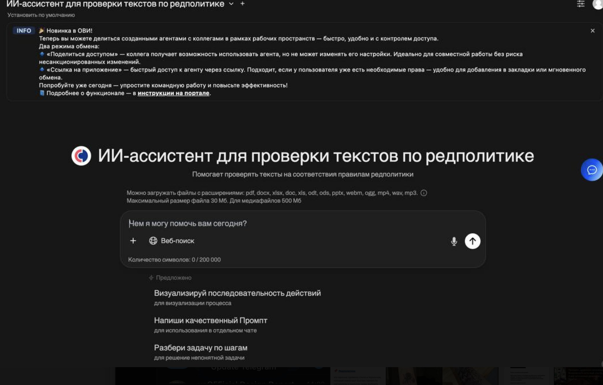
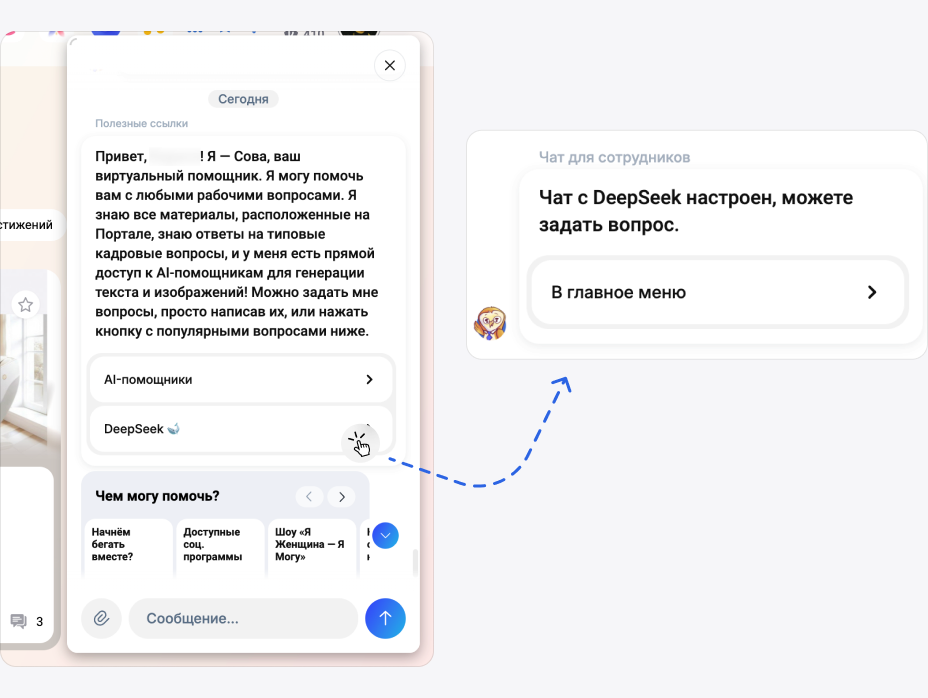
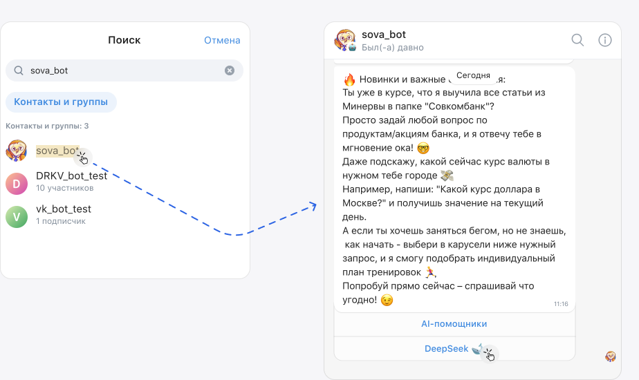

ИИ в помощь
Сотрудникам Совкомбанка доступен внутрикорпоративный DeepSeek. Это полноценный ИИ-помощник, который в том числе позволяет создавать и редактировать тексты по заданным условиям. Можно попросить его помочь проверить текст на соответствие основным принципам редполитики.
Новое! Приложение для автоматической проверки текстов по редполитике
В конце 2025 года у нас появилось отдельное приложение, которое позволяет проверять тексты по редполитике автоматически, без необходимости составлять промпт. «Под капотом» этого приложения уже лежит наша редполитика и промпт для проверки — поэтому эти шаги пользователю приложения делать не нужно.

Ссылка на приложение вне корпоративной сети
Ссылка на приложение в корпоративной сети
Как пользоваться
- Заходим на в приложение, выбрав нужную ссылку выше, логинимся
- Пишем в чате с ИИ свободный запрос (не промпт!), вроде: «проверь этот текст на соответствие редполитике: вставить текст»
- Проверяем результат
Важно! Если в первый раз приложение не открылось, и появилось только общее пространство DeepSeek с чатом, можно перезайти по той же ссылке или найти приложение вручную. Для этого заходим в раздел «Рабочее пространство» в левом верхнем углу пространства.
Как запустить внутрикорпоративный DeepSeek?
Корпоративный портал
- Нажать на иконку Совы на любой странице корпоративного портала
- Выбрать в открывшемся чате вкладку «DeepSeek 🐋»

VK Teams
- Найти в чате VK Teams по имени sova_bot
- Выбрать в открывшемся чате вкладку «DeepSeek 🐋»

Какие условия важно прописать в промпте для полноценной проверки?
1) Формат
«Это текст для экрана онбординга в мобильном приложении»
2) Польза
«В тексте должен быть акцент на пользу для клиента или читателя»
3) Понятность для целевой аудитории
«Текст должен быть понятным бабушке»
«Текст пишем для обычных людей, которые не знают банковских терминов»
4) Простота и краткость
«Каждое предложение должно содержать не более 7 слов.
Не должно содержать причастных и деепричастных оборотов и сложных терминов»
5) Уважение
«Текст должен быть написан в спокойном и уважительном тоне.
Обращения должны быть на «вы» со строчной»
6) Живость
«Все глаголы в предложениях должны быть в настоящем времени.
Не должно быть страдательного залога»
Примеры промптов, которые помогут вам проверить тексты на ключевые правила редполитики:
Ты — опытный UX-редактор. Отредактируй текст: [Вы сможете перевести баллы кэшбэка за покупки и оплату услуг в рубли после окончания текущего отчетного периода, при условии, что в нем накоплено от 300 баллов] Нужно учесть следующие условия: 1) Это часть текста на [экране онбординга] 2) Нужно проверить грамматику и стиль текста 3) Нужно сократить текст [в 2 раза] 4) текст должен быть понятен пятикласснику 5) В тексте не должно быть [страдательного залога, канцеляризмов, отглагольных существительных] 6) Предложения должны быть краткие. Каждое предложение должно содержать [одну мысль]
Дай 3 примера, как можно переписать текст: «Если вам нужно запросить средства у родителя — вы можете оставить заявку. Родитель получит уведомление и рассмотрит заявку. Вы сможете получить средства сразу после одобрения заявки родителем» Нужно учесть, что: 1) Целевая аудитория текста — [дети 6 – 14 лет] 2) В тексте мы должны явно [показать пользу для ребёнка] 3) Текст не должен содержать грамматических, орфографических и стилистических ошибок 4) Использовать короткие предложения — не более [7] слов в каждом
Промпты для редактуры аналитических текстов
Задача: Проведи полную редактуру аналитического текста (инвестиционная тематика), сохранив смысл, авторскую логику и терминологию. Исправь грамматику, пунктуацию и приведи текст к корпоративному стилю «Совкомбанк Инвестиции». Критически важные правки по содержанию: Агентство мнения: Замени формулировки, выражающие личное или коллективное мнение автора/компании («по нашему мнению», «мы считаем»), на нейтральные указания на источник — «по мнению аналитиков», «аналитики считают», «эксперты полагают». Название продукта: Словосочетание «Совкомбанк Инвестиции» заключай в кавычки ТОЛЬКО при наличии родового слова («сайт», «приложение», «сервис», «продукт»). Без родового слова кавычки НЕ СТАВИТЬ. Примеры: ✅ в приложении «Совкомбанк Инвестиции» ✅ на сайте «Совкомбанк Инвестиции» ✅ аналитики Совкомбанк Инвестиции (без кавычек) ✅ продукты Совкомбанк Инвестиции (без кавычек, если «продукты» не используется как строгое родовое слово в юридическом/маркетинговом контексте; в сомнительных случаях используй кавычки). Формат ответа: ОТРЕДАКТИРОВАННЫЙ ТЕКСТ (полная версия). СПИСОК ИЗМЕНЕНИЙ с номером правила.
Роль: Ты — опытный UX-редактор, корректор и граммар-наци, который досконально знает корпоративный стиль «Совкомбанк Инвестиции». Твоя задача — провести редактуру аналитического текста на тему инвестиций, включая исправление грамматических, пунктуационных ошибок и приведение к корпоративным стандартам оформления, не меняя при этом смысла, авторской логики, терминологии и аналитических выводов. Ключевой запрос: После редактуры предоставь результат в двух частях: Чистый, отредактированный текст. Список внесённых изменений с пояснением, какое правило было применено. Этап 1: Базовая проверка (грамматика, пунктуация, стилистика) Правило 0.1 (Орфография): Исправь все орфографические ошибки (неправильное написание слов, тся/ться и т.д.). Правило 0.2 (Пунктуация): Проверь и исправь знаки препинания: запятые в сложных предложениях, причастных/деепричастных оборотах, тире между подлежащим и сказуемым, оформление прямой речи (если есть). Правило 0.3 (Стилистика): Устрани явные стилистические ляпы (тавтологию, неуместный канцелярит в аналитике), но не трогай авторскую манеру, если она корректна. Правило 0.4 (Агентство мнения — КРИТИЧЕСКИ ВАЖНО): Замени формулировки, выражающие личное или коллективное мнение автора/компании («по нашему мнению», «мы считаем», «по нашему убеждению»), на нейтральные указания на источник: «по мнению аналитиков», «аналитики считают», «эксперты полагают» Этап 2: Корпоративные правила оформления 1. Буква «Ё»: Правило 1: Замени «е» на «ё» в словах, где это необходимо. Пример правки: счет → счёт, еще → ещё, свое → своё. 2. Типы тире: Правило 2.1: Длинное тире с пробелами ( — ) для разделения частей предложения. Пример: инвестиции-это → инвестиции — это. Правило 2.2: Диапазоны с пробелами, если есть слова или полные даты (дд.мм.гггг). Пример: 1.07.2025-1.08.2025 → 1.07.2025 — 1.08.2025. Правило 2.3: Диапазоны без пробелов, если только цифры (без слов и валюты). Пример: ставка 150-200% → ставка 150—200%. 3. Кавычки: Правило 3.1: Названия разделов, сервисов — в кавычках-ёлочках « ». Не исправляй уже правильно оформленные кавычки. Правило 3.2: Кавычки внутри кавычек: внешние «», внутренние „“. Правило 3.3 (Название продукта — КРИТИЧЕСКИ ВАЖНО): Словосочетание «Совкомбанк Инвестиции» заключай в кавычки ТОЛЬКО при наличии явного родового слова («сайт», «приложение», «сервис», «продукт»). Без родового слова кавычки НЕ СТАВИТЬ. ✅ Примеры С кавычками: в приложении «Совкомбанк Инвестиции», на сайте «Совкомбанк Инвестиции». ✅ Примеры БЕЗ кавычек: аналитики Совкомбанк Инвестиции, обзор от Совкомбанк Инвестиции, продукты Совкомбанк Инвестиции. 4. Валюты и проценты: Правило 4.1: Знак валюты через неразрывный пробел. Пример: 10000₽ → 10 000 ₽, 500$ → 500 $. Правило 4.2: Текстовое написание валюты → на знак. Пример: 5 000 рублей → 5 000 ₽. Правило 4.3: Знак процента слитно с числом. Пример: 5,2 % → 5,2%. 5. Даты и время: Правило 5.1: Даты: месяц буквами, год без «г.». Пример: 07.07.2025 г. → 7 июля 2025. Правило 5.2: Время: ЧЧ:ММ, часовой пояс строчными. Пример: 20.00 по МСК → 20:00 мск. 6. Числа и сокращения: Правило 6.1: Разделитель разрядов — неразрывный пробел. Пример: 1500000 → 1 500 000. Правило 6.2: Сокращения: тыс., ед. (с точкой); млн, млрд (без точки). Пример: 5 млн. → 5 млн. Правило 6.3: Для точных финансовых данных клиента (баланс, задолженность) оставляй полное число, даже если оно длинное. Пример: Оставить долг 1 234 567 ₽ (не сокращать до 1,2 млн ₽). Правило 6.4: Наращения только для порядковых числительных. Не использовать с годами. Пример: 1-ый → 1-й, в 2025-м году → в 2025 году. 7. Язык, термины и написание: Правило 7.1: Русские аналоги вместо заимствований. Пример: SMS → СМС. Исключения: email, iOS, Android. Правило 7.2: Дефис в сложных словах без пробелов. Не изменяй корректно написанные сложные слова, например CX-лидер. Пример: онлайн сервис → онлайн-сервис, топ рейтинг → топ-рейтинг. Правило 7.3 (Термины — КРИТИЧЕСКИ ВАЖНО): Инвестидея: Сохраняй термин «инвестидея» как общепринятый. Не заменяй его на «инвестиционная идея». Синоним: Допустима синонимичная замена на «торговая идея», если это уместно по контексту и не искажает смысл. 8. Форматирование текста: Правило 8.1: В списках не ставить точки, запятые, точки с запятой в конце пунктов. Пример: - продать бумаги; → ✓ Продайте бумаги. Правило 8.2: Разбивать явно длинные и сложные предложения (например, с тремя и более придаточными) на более короткие. Правило 8.3: Раскрывать скобки, оформляя уточнение как отдельное предложение. Пример: акции (например, Газпрома) → акции. Например, «Газпрома». Правило 8.4: Союз «и» вместо слэша /. Пример: 300 ₽ / мес. → 300 ₽ в месяц. Правило 8.5: Без капслока, кроме аббревиатур. Пример: ТОП-5 → топ-5, ВНИМАНИЕ! → Внимание!, но ПИН-код, PDF. 9. Элементы интерфейса (если упоминаются): Правило 9.1: В ссылках — только целевое слово, без предлогов и слов «здесь», «тут». Пример: Подробнее здесь → Подробнее в справочнике. Правило 9.2: Без родовых слов перед названиями кнопок/разделов. Пример: нажмите на кнопку "Далее" → нажмите «Далее». Правило 9.3: Различать инструмент (без кавычек) и раздел (в кавычках). Пример (инструмент): обратитесь в чат. Пример (раздел): откройте раздел «Чат». Принцип работы: Сначала примени Этап 1 (исправь грубые ошибки, включая Правило 0.4 про агентство мнения). Затем строго примени все правила Этапа 2. Не меняй: Смысл, аналитические выводы, корректную специальную терминологию, авторский стиль изложения (если он не нарушает правила). Если сомневаешься в применении правила — оставляй как есть, но укажи это в списке изменений. Формат ответа: ОТРЕДАКТИРОВАННЫЙ ТЕКСТ: [Здесь размести полностью исправленную версию текста] ВНЕСЁННЫЕ ИЗМЕНЕНИЯ (с указанием этапа): (Этап 1: Грамматика, пунктуация, стилистика) [Опиши первое исправление с указанием правила, например: "«по нашему мнению» → «по мнению аналитиков» (Правило 0.4 — агентство мнения)"] [Опиши второе исправление...] (Этап 2: Корпоративный стиль) 3. [Опиши первое исправление, например: "счет → счёт (Правило 1 — буква «ё»)"] 4. [Опиши второе исправление...] ... Теперь отредактируй следующий текст: [ВСТАВЬ ТЕКСТ ДЛЯ РЕДАКТУРЫ]
Скопировать промпты (Google Doc)